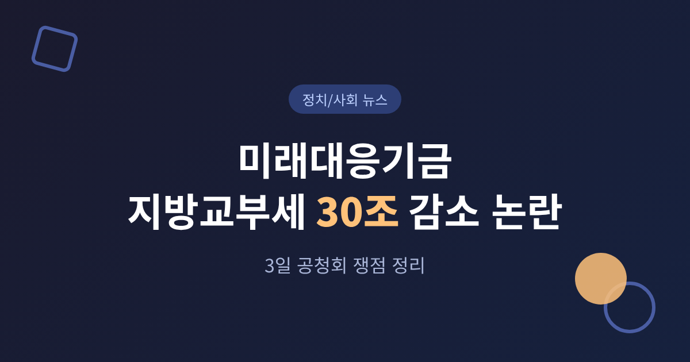
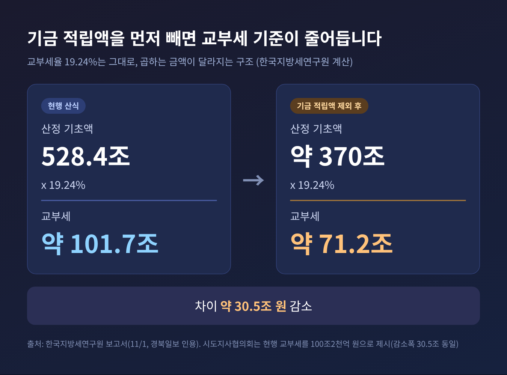
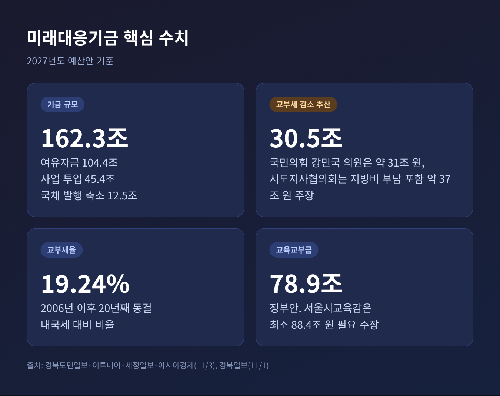
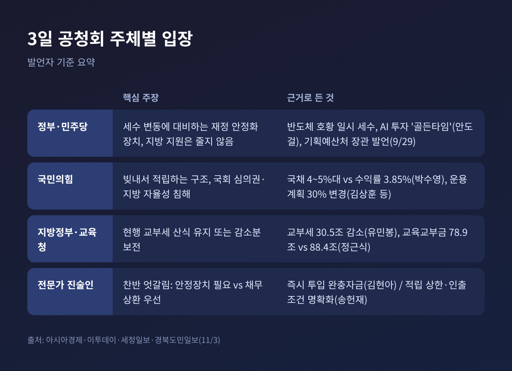
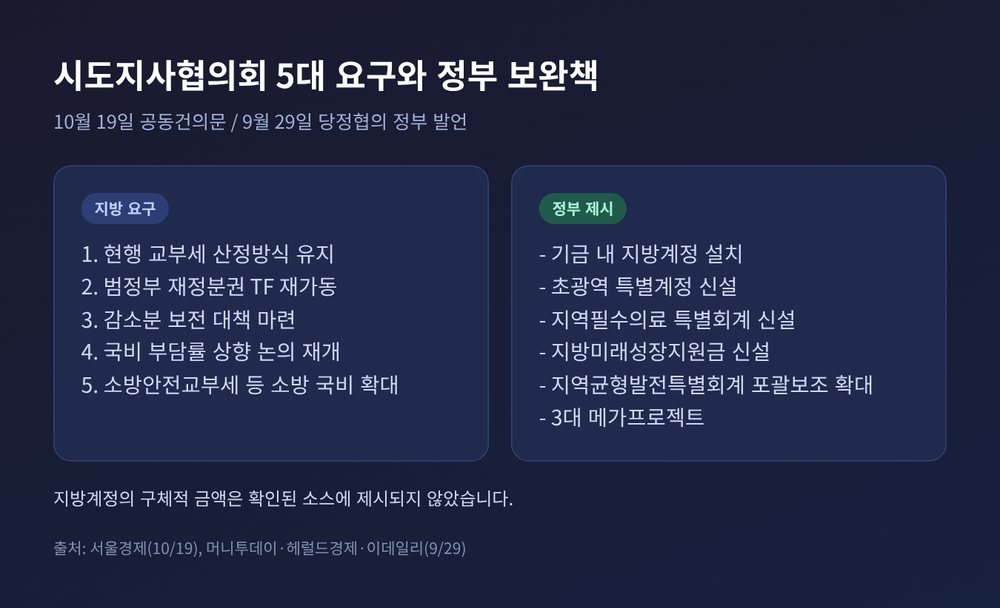
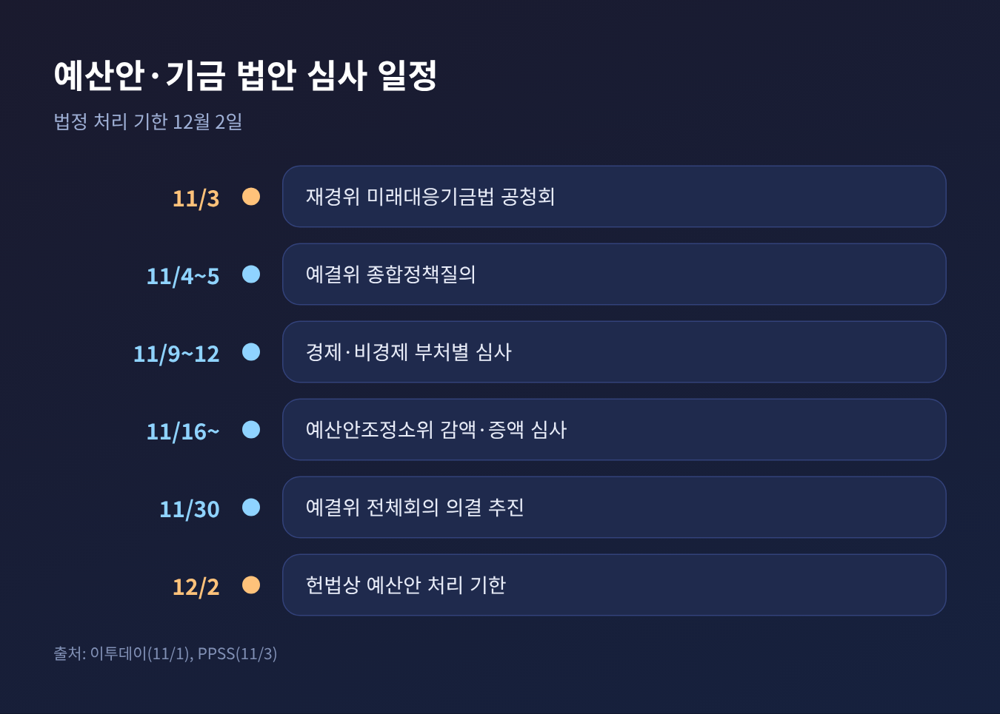

3줄 요약
오늘은 3일 열린 미래대응기금 공청회에서 나온 지방교부세 쟁점을 정리해 보려 합니다. 기금의 규모 자체보다, 그 기금이 지방재정에 미치는 영향에 초점을 맞춥니다. 여야 의원과 지방정부, 전문가의 발언은 주체를 밝혀 옮기겠습니다.
3일 국회 재정경제기획위원회(위원장 조승래)는 '미래대응기금 설치 및 운용에 관한 법률안' 제정 공청회를 열었습니다. 진술인으로는 유민봉 시도지사협의회 사무총장, 김정훈 재정정책연구원장, 김현아 한국조세재정연구원 재정연구본부장, 송헌재 서울시립대 교수, 정근식 서울시교육감이 나왔습니다.
가장 큰 논점은 숫자 하나였습니다. 유민봉 사무총장은 기금이 도입되면 내년 지방교부세가 현행 산정 방식보다 30조5천억 원 줄어든다고 설명했습니다. 국민의힘 강민국 의원도 약 31조 원 감소를 거론했습니다.
조승래 위원장은 이번 공청회가 "통과의례"가 아니라는 취지로 말하며, 진술인의 제언을 법안·예산 심사소위의 검토 자료로 쓰겠다고 밝혔습니다.
지방교부세는 중앙정부가 걷은 세금을 재정이 취약한 지방정부에 나눠주는 제도입니다. 재원은 내국세의 19.24%로 정해져 있고, 이 비율은 2006년 이후 20년째 같습니다.
정부안은 이 비율을 건드리지 않습니다. 대신 기금에 적립하는 금액을 내국세에서 먼저 뺀 뒤 교부세를 계산합니다. 비율은 같은데 곱하는 금액이 작아지는 셈입니다.

한국지방세연구원이 1일 내놓은 보고서(경북일보 인용)에 따르면 계산은 이렇습니다. 내국세 세입예산 529조3천억 원, 산정 기초액 528조4천억 원에 19.24%를 곱하면 교부세는 약 101조7천억 원입니다. 기금 적립액을 뺀 기초액은 약 370조 원으로, 교부세는 약 71조2천억 원이 됩니다. 차이가 약 30조5천억 원입니다.
수치에는 서로 다른 부분도 있습니다. 현행 방식의 내년 교부세를 유민봉 사무총장은 100조2천억 원, 지방세연구원은 약 101조7천억 원으로 제시했습니다. 감소폭은 두 곳 모두 30조5천억 원으로 같습니다. 또 시도지사협의회는 국비 사업에 따른 지방비 추가 부담 6조8천억 원을 더하면 실제로 쓸 수 있는 재원이 62조9천억 원, 약 37조 원 줄어든다고 주장합니다. 이 37조 원은 협의회 측 추산이며, 정부의 공식 수치는 이번 조사에서 확인하지 못했습니다.

정부는 기금을 두 가지로 설명해 왔습니다. 잠재성장률을 끌어올리는 전략 투자 수단이자, 세수 변동성을 줄이는 재정 안정화 장치라는 것입니다.
박홍근 기획예산처 장관은 9월 29일 당정협의에서 지방 지원은 "얇아지지 않을 것"이라고 말했습니다. 기금 안에 지방계정을 두고, 초광역 특별계정과 지역필수의료 특별회계를 새로 만들겠다는 보완책도 내놓았습니다. 윤호중 행정안전부 장관은 내년 교부세가 올해보다 늘도록 설계돼 있다면서도, 지방정부의 기대 수준과는 차이가 있다고 인정했습니다.
이 대목은 구분해서 보셔야 합니다. 정부가 말하는 것은 '올해보다 줄지 않는다'이고, 지방이 말하는 것은 '기존 산식대로 계산했을 때보다 줄어든다'입니다. 두 주장이 반드시 모순은 아닙니다.
공청회에서 더불어민주당 안도걸 의원은 반도체 호황으로 생긴 일시적 추가 세수를 적립할 필요가 있다며 지금이 "골든타임"이라고 말했습니다. 김현아 한국조세재정연구원 본부장은 국채 금리와 운용수익률의 차이만으로 기금의 효용을 판단해서는 안 된다고 했습니다. 세수 결손이 생겼을 때 구조조정이나 추경을 거치는 시간과 비용을 함께 봐야 한다는 취지입니다.
국민의힘 강민국 의원은 지방이 자율적으로 쓰던 재원이 중앙정부가 용도를 정하는 목적성 재원으로 바뀔 수 있다고 우려했습니다. 박수영 의원은 내년에 국채 106조 원을 발행해 104조 원을 여유자금으로 쌓는 구조를 문제 삼았습니다. 국채 조달금리는 4~5%대인데 운용수익률은 3.85%로 가정했다는 점을 들어 "빚내서 적립"하는 방식이라고 비판했습니다.
국회의 심의권 문제도 나왔습니다. 정부가 기금 운용계획의 30%까지는 국회 의결 없이 바꿀 수 있도록 하려 한다는 점을, 김상훈·이종욱 의원이 국회 재정통제권 약화라고 지적했습니다.
진술인 가운데서는 송헌재 서울시립대 교수가 비슷한 취지로 말했습니다. 국가채무가 쌓인 상황에서는 빚 상환이 우선이고, 적립 상한과 인출 조건이 분명해야 한다는 주장입니다. 정부 계획에는 기금 중 12조5천억 원을 국채 신규 발행 축소에 쓰는 안도 들어 있다고 경북도민일보는 전했습니다.

한계도 짚어 두겠습니다. 오기형 민주당 간사는 야당도 기금의 필요성에는 공감한다고 말했습니다. 다만 이는 오 간사의 발언이며, 국민의힘이 당 차원에서 밝힌 입장은 여유자금 104조4천억 원을 국채 상환에 써야 한다는 쪽입니다.
이번 쟁점은 여야 구도 하나로 정리되지 않습니다. 9월 29일 당정협의는 민주당 소속 광역단체장들의 우려가 당 지도부와 정부에 전달된 상황에서 열렸습니다.
박찬대 시도지사협의회장(인천시장)은 10월 19일 공동건의문을 내고 다섯 가지를 요구했습니다. 현행 교부세 산정 방식 유지, 재정분권 태스크포스 재가동, 감소분 보전 대책, 국비 부담률 상향 논의 재개, 소방 국비 지원 확대입니다. 협의회는 기금 신설 취지에는 공감한다는 입장입니다.
지자체별로도 사정이 달랐습니다. 충남 박수현 지사는 당정협의에서 충남 교부세가 약 2조6천억 원 줄 것으로 추산했습니다. 내무부 의견조회 자료(파이낸셜뉴스 9월 30일 보도)에서는 경기도가 결산 부족분은 지방이 안고 초과분은 정산에서 빠지는 '비대칭 구조'를 지적했고, 강원도는 기금 전출 상한을 70% 이하로 두자고 제안했습니다.
교육 분야도 얽혀 있습니다. 정근식 서울시교육감은 정부안 교육교부금 78조9천억 원으로는 부족하다며 최소 88조4천억 원이 필요하다고 주장했습니다. 정부안대로면 약 7조4천억 원 규모의 필수 사업을 편성하지 못한다는 계산입니다. 증가율이 5%를 넘는 부분의 일부만 기금으로 보내는 '5% 완충장치'도 대안으로 내놓았습니다.

그동안 지방은 교부세율 인상을 요구해 왔습니다. 이번에는 비율보다 '무엇에 곱하느냐'가 쟁점입니다. 경북일보가 인용한 지방세연구원 분석에 따르면 감소분을 전부 메우려면 교부세율을 27.48%까지 올려야 합니다. 통상 거론되는 2~3%포인트 인상으로는 19조4천억~26조8천억 원의 공백이 남습니다. 연구원은 27.48%가 적정 세율을 뜻하는 것은 아니라고 선을 그었습니다.
공청회는 시작입니다. 4~5일 예결위 종합정책질의, 9~12일 부처별 심사, 16일부터 예산안조정소위, 30일 전체회의 의결 추진, 헌법상 처리 기한은 12월 2일입니다.

법안과 예산이 동시에 움직인다는 점이 변수입니다. 국민의힘 배준영 간사는 법안소위에서 법적 타당성이 정리될 때까지 예결위의 기금 예산안 심사를 중단하라고 요청했습니다. 오기형 민주당 간사는 일주일에 한 번씩이라도 집중 심사를 해서 쟁점을 풀어야 한다고 맞섰습니다. 아주경제는 여야 강대강 대치로 법정시한 내 처리가 어려울 수 있다는 전망이 나온다고 전했습니다.
앞으로 눈여겨볼 지점은 세 가지입니다. 첫째, 교부세 산정에서 기금 전출액을 제외하는 방식이 수정되는지입니다. 둘째, 감소분을 보전하는 지방계정이나 교부세율 인상이 어느 수준으로 합의되는지입니다. 셋째, 기금 운용계획 변경 한도와 국회 통제 장치가 법안에 어떻게 담기는지입니다. 지자체별 영향 공개 문제도 남아 있습니다. 권영진 국민의힘 의원은 내무부가 지자체별 감소액을 밝히지 않았다고 지적한 바 있습니다.
정리하면 이렇습니다.
이번 논쟁에는 기금이 필요한지와 어떤 방식이어야 하는지가 겹쳐 있습니다. 특히 얼마를, 누구의 몫에서, 어떤 통제 아래 쌓느냐가 갈리는 지점입니다. 지방은 몫이 줄어드는 계산을, 야당은 국회의 손이 닿지 않는 구조를, 정부와 여당은 호황기에 쌓아 두는 안전판을 각각 내세웁니다.
기금의 취지와 지방의 몫은 따로 떼어 볼 수 없습니다 — 이것이 이번 공청회가 남긴 숙제입니다.
세 입장 모두 근거가 되는 숫자를 갖고 있습니다. 그 숫자들이 한 테이블에서 같은 기준으로 놓일 때까지, 이 논쟁은 법정 기한인 12월 2일까지 이어질 수 있습니다.